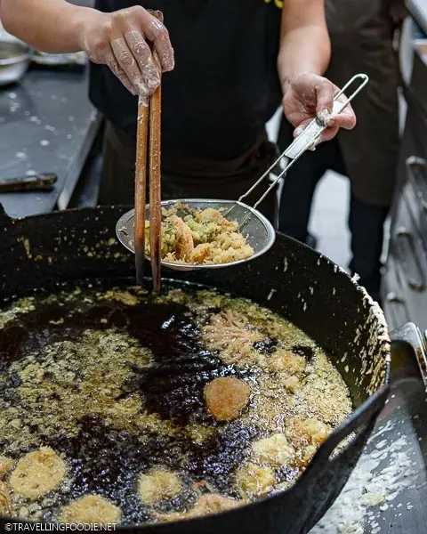
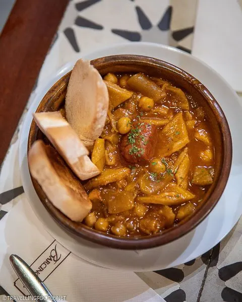

Being the capital of the Philippines, Manila’s food scene is emerging
as the hub for food lovers from around the world with over 22,000
restaurants. With this many options, it’s hard to decide where to eat
in Manila. One thing I love about being a travelling foodie is
learning about a destination’s culture through its food. Besides being
a city with rich heritage, Manila has a unique food culture that awes
the foodies.
When you visit the Philippines, you’ll quickly realize that Filipinos
love to eat! It’s just part of the culture, which is why Manila has a
plethora of restaurants that offer diverse world cuisines. Big chains
have noticed this too: some of the most popular international chain
restaurants have opened in Manila like Shake Shack, In-N-Out (pop-up),
Tim Horton’s and Ippudo. I was actually surprised to find out Toronto
is quite behind than Manila with these big franchises.
The food in the Philippines is strongly influenced by the cultures
that inhabited its islands including Spanish, American and Chinese.
Spanish food is rampant in Manila, and some of the most popular
Filipino dishes are adapted from Spanish cuisine. The majority of the
Filipino-Chinese community in Manila is of Fujianese descent so you
will see restaurants serving authentic Fujianese cuisine, which is
uncommon to find in other countries. With this boom in Manila’s food
culture comes a price, and I noticed that restaurant pricing can be
similar to North American restaurant prices.
Best Restaurants in Manila
Here are some of the best restaurants in Manila!
Akimitsu Tendon
The Japanese food scene in Manila is strong with lots of restaurants
coming from Japan. One of which is Tendon Akimitsu for some delicious
tempura offerings. Akimitsu Tendon was started as a single restaurant
in Asakusa, Tokyo by chef Akimitsu Tanihara, who has mastered the art
of making two Japanese dishes, called tempura and tendon.

It has a long history of making a special rice bowl authentic Japanese
dish called Donburi. Chef Akimitsu Tanihara won the gold medal at the
prestigious Japan Donburi Awards for five years in a row (2014-2018)
as well as gold in the highest award in the world of tempura cuisine
called the “King Of Tempura Bowl” in 2014.
Barcino
Barcino is one of the best restaurants in Manila for authentic Spanish
cuisine with tapas, paella and tradicionales. In fact, the founders
originated from Barcelona who wanted to bring the authentic Spanish
taste to the Philippines.
On some nights a week, Barcino also invites locals bands to play music
while people enjoy the delicacy of Spanish cuisine.

They also give a tribute to Spanish wine with a vast collection in
which you can have the staff suggest a wine pairing with your dish.
Apart from their main branch in SM Aura, they have many branches in
Makati, Alabang and other food districts in Manila.
Coral Garden Restaurant
Serving guests since 1978, Coral Garden is a gem among locals looking
for authentic Chinese and Fujianese dishes. They serve unique dishes
not commonly found in other Chinese restaurants, making it one of the
must-try Chinese restaurants in Manila. You won’t find exotic Filipino
dishes here, but instead find exotic Fujianese ones like the
stir-fried pork kidney.